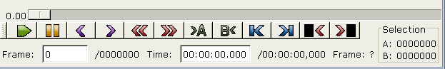
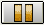
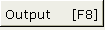

|
L'interfaccia grafica 1.Barra degli strumenti   Premere per fermare la riproduzione Premere per tornare al frame precedente. L'operazione può richiedere parecchi secondi in quanto avidemux deve tornare al precedente I-frame. Premere per tornare al frame intermedio precedente (keyframe). Premere per andare all'ultimo frame. Questa finestra indica quale è la sorgente audio attiva (avi/wav esterno/MP3 esterno..) Questa funzione di anteprima è terribilmente lenta.  Se premuto, nella finestra principale verrà visualizzato durante la riproduzione (e solo durante di essa) il filmato con i filtri applicati. E' un metodo di visualizzazione veloce e nella maggioranza dei casi con effetto di tempo reale. |
 Premere una volta per avviare la riproduzione, una seconda per fermarla.
Premere una volta per avviare la riproduzione, una seconda per fermarla.
 Premere per andare al frame successivo.
Premere per andare al frame successivo.
 Premere per tornare al frame intermedio successivo (keyframe).
Premere per tornare al frame intermedio successivo (keyframe).
 Premere per inserire il marcatore A (vedere
Premere per inserire il marcatore A (vedere  Premere per inserire il marcatore B (vedere
Premere per inserire il marcatore B (vedere  Premere per tornare al primo frame.
Premere per tornare al primo frame.
 Premere il pulsante per aprire una nuova finestra che offrirà l'anteprima dei filtri applicati. Navigando nella finestra principale, l'anteprima verrà aggiornata di conseguenza.
Premere il pulsante per aprire una nuova finestra che offrirà l'anteprima dei filtri applicati. Navigando nella finestra principale, l'anteprima verrà aggiornata di conseguenza.